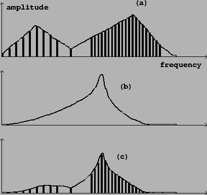

Subtractive synthesis is the technique of using filters to shape the spectral envelope of a sound, forming another sound, usually preserving qualities of the original sound such as pitch, roughness, noisiness, or graniness. The spectral envelope of the resulting sound is the product of the spectral envelope of the original sound with the frequency response of the filter. Figure 8.24 shows a possible configuration of source, filter, and result.
|  |
The filter may be constant or time-varying. Already in wide use by the mid 1950s, subtractive synthesis boomed with the introduction of the voltage-controlled filter (VCF), which became widely available in the mid 1960s with the appearance of modular synthesizers. A typical VCF has two inputs: one for the sound to filter, and one to vary the center or cutoff frequency of the filter.
A popular use of a VCF is to control the center frequency of a resonant filter from the same ADSR generator that controls the amplitude; a possible block diagram is shown in Figure 8.25. In this configuration, the louder portion of a note (loudness roughly controlled by the multiplier at the bottom) may also be made to sound brighter, using the filter, than the quieter parts; this can mimic the spectral evolution of strings or brass instruments over the life of a note.